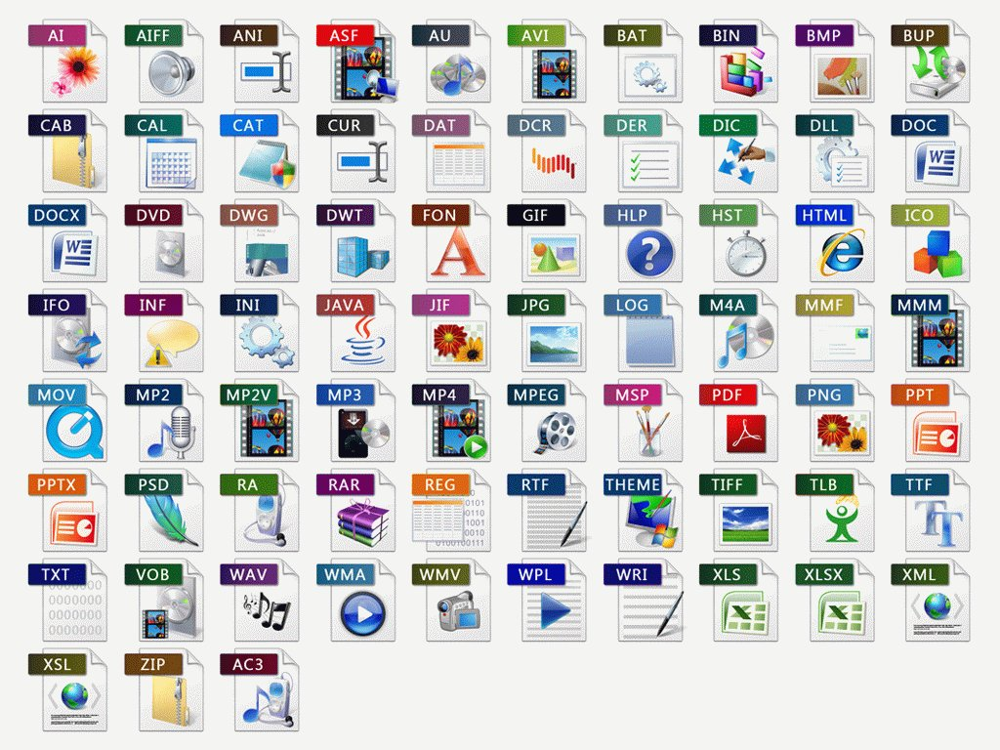

Reading & Writing Files
Text, CSV and JSON


File Path
Absolute
/Users/edsu/inst326/slides.pdfRelative
inst326/slides.pdf
Text, CSV and JSON
Text Files
speech.txt is an example of a text file. Here are a few things to notice about text files:
- text files often have a .txt file extension
- text files have lines separated by newline characters
- text files have an encoding, usually Unicode
Read a Text File
Use the open function to open a file using the file’s path as a parameter. Use the file object’s read method to read the contents of the file into a variable.
Writing a Text File
You can also use the open function to open a file for writing by passing in w as a second argument to open. This then allows you to write data to a file.
Iterating
You can use a for loop to iterate through the lines in a file object.
Why might it be important to be able to read a file line by line instead of all at once?
Spreadsheets

CSV

Comma Separated Values
Read a CSV File
While it would be possible to read a CSV file as a text file Python’s csv module helps you do it.
Read a CSV File
The csv.DictReader class uses the column headers in your CSV file to create a dictionary for each row.
Write a CSV File
You can also use the csv.writer class to write a CSV file row by row.
Unfortunately, not all data fits neatly into tables. What makes this example hard to represent as a table?
people = [
{
"name": "Val",
"interests": ["astronomy", "hocky"]
},
{
"name": "Rick",
"interests": ["karaoke"]
}
]The interests can have one to many values.
APIs
Reading a JSON File
Python comes with a json module which makes it easy to read JSON using the json.load function. We’ll use it to load this JSON file of tweet data: aoc.json.
Write a JSON File
You can also use the json.dump function to save a data structure to a file.
In Summary
We covered a lot of territory learning about input and output operations:
- Files and Paths
- read & write Text files
- read & write CSV files
- read & write JSON files